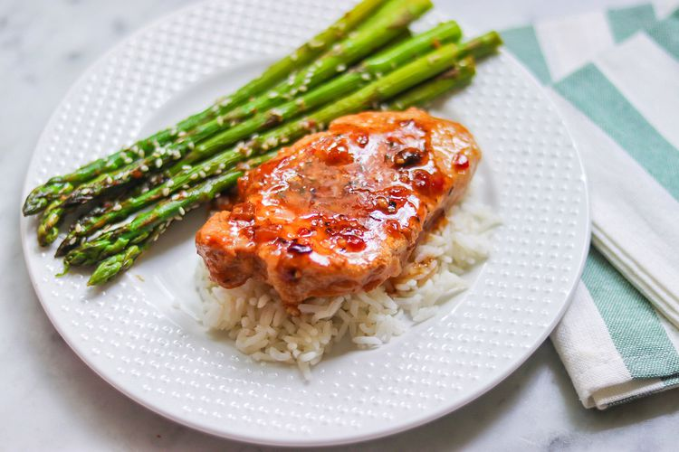
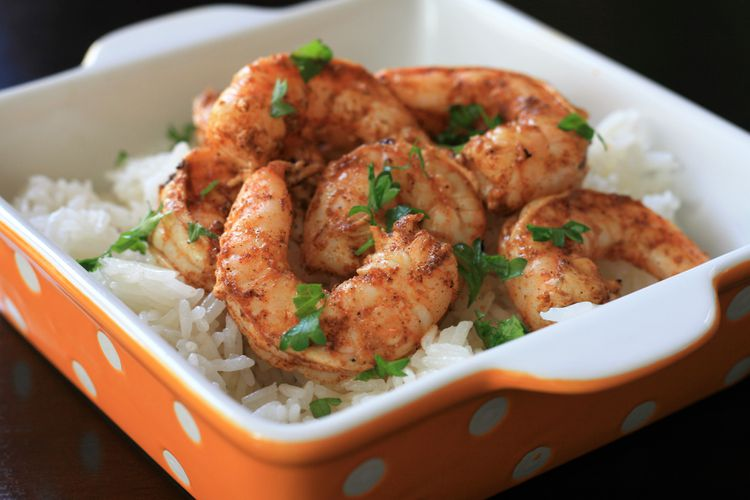
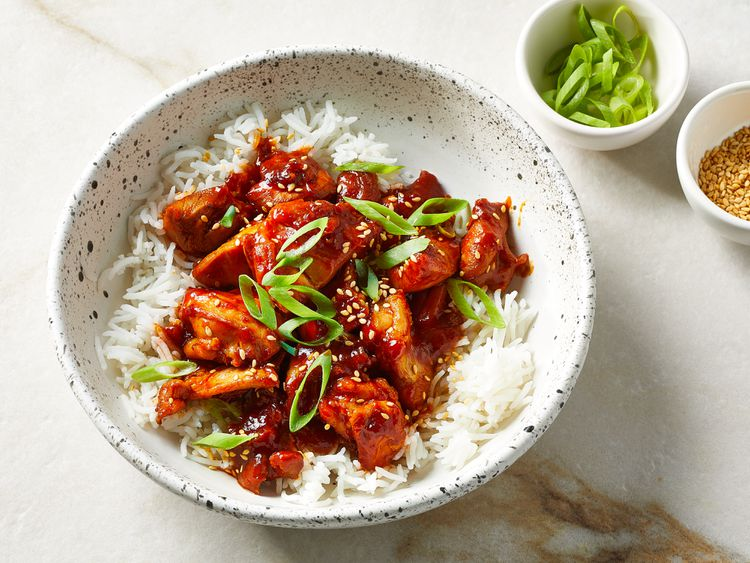

Melinda's Meals
Yummy Pork Chops
Total Time 30 min.
Makes 1 doz.
Author SexySerina

INGREDIENTS
- 2 cups italian-style salad dressing
- 1/4 cup soy sauce
- 1/2 teaspoon pepper
- 4 boneless pork chops
DIRECTIONS
-
In a bowl, mix the italian-style salad dressing, soy sauce,
and pepper.
-
Place the pork chops in a skillet over meadium heat, and cover
with the dressing mixture.
-
Cover skillet, and coook pork chops 25 minutes, turning
occasionally.
-
Remove cover, reduce heat to low, and continue cooking
to desired doneness.
Spicy Lime Grilled Shrimp
Total Time 30 min.
Makes 8 servings
Author KimmyK

INGREDIENTS
- 3 tablespoons cajun seasoning (your choice)
- 1 lime, juiced
- 1 tablespoon vegetable oil
- 1 pound peeled and deveined medium shrimp
DIRECTIONS
-
Mix together cajun seasoning, lime juice, and oil in a
reuseable plastic bag.
-
Add shrimp, coat with marinade, and marinate for 30 minutes.
-
Preheat outdoor grill for medium heat and lightly
oil the grate.
-
Cook shrimp on grill until bright pink on the outside
and it is no longer transparent in the center, aboutr
2 minutes on each side.
Sweet and Spicy Gochujang Chicken
Total Time 30 min.
Makes 6 servings
Author Sarah Brekke

INGREDIENTS
- 1/3 cup gochujang (korean hot pepper paste)
- 4 tablespoons soy sauce
- 2 tablespoons sweet rice wine (mirin)
- 2 tablespoons honey
- 3 garlic cloves, grated
- 1 teaspoon seasame oil, or more to taste
- 1 teaspoon freshly grated ginger
- 1 tablespoon canola oil
- 1-1/2 teaspoons toasted sesame seeds
- 3 tablespoons thinly bias-sliced
- 6 cups cooked rice
- 2 pounds skinless, boneles chicken breats, cut into pices
DIRECTIONS
-
Stir together gochujang, soy sauce, sweet rice wine, honey,
garlic, sesame oil, and ginger in a small bowl.
-
Heat oil over medium-high heat in a wok (or large skillet),
add chicken and cook until no longer pink.
-
Remove all chicken from wok. Stir sauce well and add to the
wok. Cook until thick and bubbly.
-
Once sauce is thick and bubbly, add chicken and cook until
hot.
-
Top with sesame seeds and green onions. Serve immediately
with cooked rice.